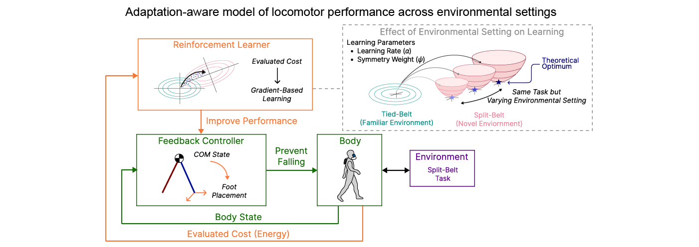
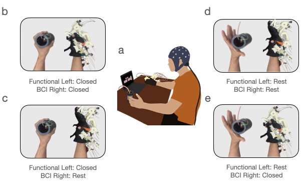

|
Kanishka Mitra I am a PhD student in EECS at MIT, advised by Mehrdad Jazayeri. My research lies at the intersection of AI, robotics, neuroscience, and brain-computer interfaces. I am broadly interested in how brains learn, plan, and generalize, and how those principles can be used to build more adaptive and efficient intelligent systems. I am supported by the Siebel Scholars award. Previously, I received my BSEE and MSE from UT Austin, where I worked with José del R. Millán and Ashish Deshpande on brain-machine interfaces for rehabilitation robotics. My work focused on real-time decoding of motor imagery to control an upper-body exoskeleton, combining experimental design, neural signal processing, and machine learning. |

Add your headshot at assets/clipart_headshot_2.png |
ResearchI'm interested in neuroscience-inspired AI, brain-computer interfaces, robotics, and machine learning. Most of my research is about understanding how brains learn, plan, and generalize, and using those principles to build more adaptive and efficient intelligent systems, often through neural decoding, primate behavior, and neuro-AI. Some papers are highlighted. |
Publications |
|
 |
Fall Risk-Aware Adaptation Explains Suboptimal Locomotor
Performance
Inseung Kang, Kanishka Mitra, Nidhi Seethapathi bioRxiv, 2026 project page / bioRxiv / code A locomotor adaptation study showing that seemingly suboptimal performance in novel split-belt environments is explained by fall-risk-aware learning, with participants shifting toward safer parameter regions instead of purely minimizing energy. |

|
Real-Time Decoding of Movement Onset and Offset for
Brain-Controlled Rehabilitation Exoskeleton
Kanishka Mitra, Satyam Kumar, Frigyes Samuel Racz, Deland Liu, Ashish D. Deshpande, José del R. Millán ICRA, 2026 project page / paper / code / arXiv An online EEG-BCI that lets users initiate and terminate upper-limb exoskeleton assistance in real time, while a fixation-based recentering strategy improves separability and robustness across sessions. |

|
Characterizing Expectation Mismatch in a
Brain-Controlled Upper-Body Rehabilitation Exoskeleton
Satyam Kumar, Kanishka Mitra, Deland H. Liu, Hussein Alawieh, Frigyes Samuel Racz, Stefano Dalla Gasperina, Ashish D. Deshpande, José del R. Millán RA-L, 2025 project page / paper / IEEE A brain-controlled rehabilitation exoskeleton study that transfers an expert decoder to naive users and characterizes expectation-mismatch ErrPs, with subject-independent error decoding reaching a mean AUC of 0.77. |
|
 |
Performing Bimanual Tasks with a BCI: Combining a
Brain-Controlled Hand Exoskeleton with the Functional
Limb
Satyam Kumar, Kanishka Mitra, Ruofan Liu, Hussein Alawieh, Akhil Surapaneni, Ashish D. Deshpande, José del R. Millán NER, 2025 (Oral Presentation) project page / paper / arXiv A multi-day MI-BCI study showing that a unimanual hand-flexion decoder can transfer to realistic bimanual tasks with a robotic hand exoskeleton and improve with training across sessions. |

|
Characterizing the onset and offset of motor imagery
during passive arm movements induced by an upper-body
exoskeleton
Kanishka Mitra, Frigyes Samuel Racz, Satyam Kumar, Ashish D. Deshpande, José del R. Millán IROS, 2023 (Oral Presentation, Attendee’s Choice Best Poster at InterfaceRice) project page / paper / IEEE A motor-imagery decoding study that separates onset and offset during passive arm motion in an upper-body exoskeleton, showing reliable offline and pseudo-online performance for future assistive BMI control. |

|
A Hierarchical Machine Learning Approach for Real-Time
BMI Control of an Upper-Body Exoskeleton
Kanishka Mitra, Frigyes Samuel Racz, Anna Bucchieri, Satyam Kumar, Hussein Alawieh, Ashish D. Deshpande, José del R. Millán IJCAI Workshop Demo, 2023 project page / paper A workshop demo of a hierarchical streaming BMI that detects motor-imagery onset and offset in real time to initiate and terminate passive reaching with the Harmony upper-body exoskeleton. |